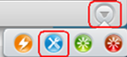
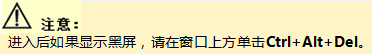
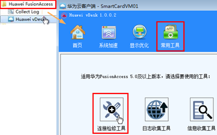
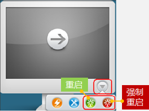

| 首页 > 无法登录VM |
| 联机帮助 | =======WI帮助 | >>>>>>> 7cf7c9997bcec953e9a329c30100afadb59cc3b7
| 无法登录VM（原因：禁用网卡、修改网卡信息、修改连接服务依赖的文件或注册表信息。） |
|
方法一： 1. 进入自助维护台。  <<<<<<< HEAD 2. 在开始菜单中，单击Huawei FusionAccess > Huawei vDesk。 3. 单击常用工具 > 连接检修工具，按界面提示完成修复。 4. 进入VM列表界面，单击VM，进入VM桌面。 5. 如果无法登录，请使用方法二。 |
=======
 |
|
方法二： 1. 通过 2. 等待VM重启完成。 3. 重新进入登录界面，输入用户域帐号和密码。 本地用户修改用户名后，在ITA界面需同步修改，否则 无法下次登录虚拟机。 4. 进入VM列表界面，单击VM，进入VM桌面。 5. 如果无法登录，请通过右图中的 6. 重复步骤2~步骤4，登录VM。如果无法登录，请联系管理员。 |
 |
 按钮重启VM，如右图所示。
按钮重启VM，如右图所示。 按钮重启VM。
按钮重启VM。